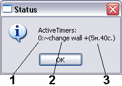
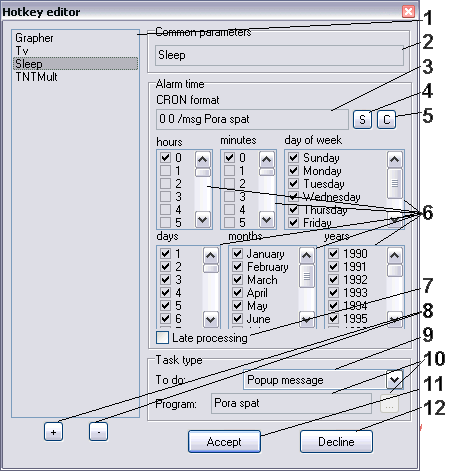

The scheduler and timer with possibility of indication of the stayed time
Version: 1.3
Author: Python <smisoft@rambler.ru> (c) SmiSoft (SA)
What is this:
There are a few program, that after a given period elapsed, execute given operation
like executing a program, or showing popup message. This is very useful, when you play
an intresting game and don't want to play for a long time.
The example program of that series you can find in Windows (it named Sheduler
in Windows, it's icon you can see in system tray (near clocks)
in Windows 98, or it is running as a service in Windows NT/2000/XP. Also, in Unix
the same program called Cron. There are a Windows program nnCron, clone of original
Unix's Cron. It is freeware for russian users and shareware for all other.
That program was the base for my plugin. You can easy find nnCron in Internet.
What it can:
Show any given text message, or On Screen Display message (OSD) or runs given
program (with parameters) or call any TaR's command through standart interface
in given time, or after given period of time elapsed or periodically, with given
period. Period can vary from 1 second up to 68 years! You can create up to 100
timers and shedulers. They will work simultaneosely with low processor loading
(less than 1 persent on 800 MHz machine). Time period in timer given in specific
format (like 2:30:45) and for sheduler you should learn simple, but effective Cron
format.
Also, it can show stayed time on analog clocks (round). You can see only one
timer's status at a time, to see other timer you should kill previous, or modify
it to invisible.
Four task types: /msg - popup modal message, /osd - On Screen
Display message, /run - program execute, /tar - TaR's command execute.
How to use:
Main Cron's concepts (IMPORTANT!)
At the alias description you'll see word Cron. What is this?
As I Have told, Cron format was originally created for the same name program
Cron in Unix. Program appeared to be very successful and a numerous clones soon
appeared. My plugin is clone of that program too (but all code was written by me,
no third-party blocks of code was used.
Cron's time is a text line, consists of 6 blocks:
minutes hours days months day_of_week years
Each block represents set of possible values, or ranges, for example:
"0,1,5-10", or special char *, which means "all possible values".
Finite blocks, contains only * is possible to omit. For example, "10 12"
means 12 hours 10 minutes at all days.
You can set day of weeks in Cron. They represented by ordinal number so Sunday
has number 0, and days from Monday to Saturday - numbers from 1 to 6 correspondingly.
Date satisfies Cron's format (and then appropriate job executes) only when all
data fields satisfies corresponding Cron's field. For example, Cron line
"0 20 * * 0,6" forces plugin to execute given task at 8:00 вечером on
holidays (Saturday and Sunday).
Main job's concepts (IMPORTANT!)
During alias's description, term job will be used. What is this?
Plugin currently supports four types of jobs:
- /msg line
Shows modal window with given message. Special chars can be used:
\n - line carry
\t - tab stop
\\ - character \
- /run program_name_with_path parameters
or
/run "program name with spaces" parameters
Executes programwith given parameters in current (TaR's) folder.
- /osd line
Shows message in the middle of the screen on a contrast background for one
second. Function doesn't use third-party libraries, but word no so good, as I want,
but in regular mode (not in full screen games) it works quite good.
- /tar line
Transfer given command to Tar through standart interface.
If no key defined, or no time defined, an error message will be diaplayed and
shedule or timer will not be installed.
Aliases:
- ~SetTimer HH:MM:SS [id] [/a] [/loop] [/late] [/start] task
Install new or modify existing timer.
- HH:MM:SS - time period, after which timer will execute task.
You can set time as HH:MM:SS (for example 3:0:7 - will work
in 3 hours 7 seconds) or MM:SS (for example, 7: - will work
equally in 7 minutes) or SSSS (for example, 600 - will work
in 600 seconds (10 minutes))
As you see, you can omit leading zeroes, or even zeroed parameters
(for example, 3::7, but it is unusual).
You can't set timer for 0 seconds, you will be reported an error.
- id - if you know timer's id, you can modify or delete it.
If you omit this parameter, you will set timer with 0 id. You can't get
information about timer with id 0 (only in full information) and you can
only kill last installed timer with id 0. Also, you can't modify timers with
id 0.
- /a means, that you'll see analog clock in rigth upper corner of
the screen, that shows you stayed time. That is not a window, but a picture,
therefore you can't move it but you can press buttons under it.
- /loop - create cyclic timer (executes every period with given time
period). You may use it, for example, to create time, that shows you information
about a break in work (for your eyes safety).
- /Late - performs timer's action, as it possible. So, you can switch
off the computer, but timer will activate (if it must be activated during
computer was off) as sson as plugin will be loaded.
- /Start - useful only if keys /Loop и /Late defined.
If timer has not worked on due time, it will work at once on plugin's start
(rule /Late), and next run (rule /Loop) will take place or in
accuracy in the indicated time (if /Start indicated), or at a time, like
all timers have been executed.
For example, at 13:00 you have set timer at 1 hour (cyclic). Timer ararms
at 14:00, then computer was switch off and switch on only at 17:30. If key
/Late was indicated, then timer will alarm at once. If key /Start
was indicated then next alarm will be at 18:30, if no - then at 18:00 (like
timer at 15:00, 16:00 and 17:00 alarmed). You should use or not use this key
depend on your task.
Examples of use:
- ~SetTimer 600 /a /msg Turn off teapot
if you want to boil your teapot for 10 minutes with indicator. Or so:
- ~SetTimer 3:: /run C:\Programs\TerminateHalfLife.exe
if you want to shutdown an intresting game after 3 hours of playing.
Feature: keys /a can be indicated for several timer simultaneosly, but you
will se only first of them (which was installet first). If you'll kill it with
~killtimer, or it will elapse itself, or it will hide by ~settimer without /a,
when next timer will be visible.
- ~KillTimer [id]
Destroy timer with given id or all timers, if id omitted.
- ~GetTimer [id]
Displays information about timer with given id or about all timers if id omitted.

- timer identifier
- executing command (message, program or alias, depending ot task type)
- remaining time
- ~SetShed id Cron [/Late] task
Installs shedule.
- Id - any non-blank string, contains any printable character except
for spaces.
- Cron - alarm time in Cron (look that section) format.
- /Late - means, that this task will be executed even if it is late.
This feature may not work on 29 february.
- Task - any correctly given task (look that section).
- ~KillShed [id]
Destroy shedule with given id or all shedules id id omitted.
- ~GetShed [id]
Display shedule with given id information or calls editor if id omitted.
You can use popup menus in editor - look.

- Shedule list. Click to edit.
- Task name (id). If you'll enter space in name, you can't delete that shedule
with ~KillShed, only from editor.
- String in format Cron [flags] task. You can edit it, or visual fields (later).
- Convert visual appearance into Cron. Update field 3 with new data.
- Convert Cron into vissual appearance. Update visual fields. When items
in list 1 switches, visual fields and Cron correspond each other.
- Visual fields for data editing. Check that condition, when you task should
be performed.
- Specify /Late flag.
- Left button (+) add new record into list. For data will be used last edited
(visual or Cron) performation. Right button (-) deletes selected record.
- Type of performed task
- Task parameter (depends on task type) - message, program name of alias.
- Save changes and exit. Also, you can simply press Enter on text fields.
- Exit without saving. Also, you can exit with Esc.
- ~SetLoad [number] [/1] [/timeout time] task
Set task, performed at system's loading (like Autoexec, but more powerful).
Parameters:
- number - use only if you want to edit existing task with given number (from 1 to 25).
- /1 - means, that task will be perfomed once (then deleted). For
example, if you want to remember yourself to format hard-drive at next loading :).
- /timeout time - tasks can be performed not one after one, but after
given period of time elapsed. In Autoexec all shortcuts runs simultaneosely,
this parameter helps to avoid that chaos.
- task - any correct task (look above...).
- ~KillLoad [number]
Kills task with given number (and renumbers remaining). if no number specified,
then deletes all tasks (no warning will appear!)
- ~GetLoad
Shows all tasks for autoload.
- ~SetUnLoad [number] [/1] [/timeout time] task
Same as ~SetLoad, but performs at system's shutdown.
- ~KillUnload [number]
Same as ~KillLoad, but for tasks, performaed at system's shutdown.
- ~GetUnload
Shows all tasks, performing on system's shutdown.
- ~ForgetCD [parameter]
Forget-CD-not. Pull out CD from drive, if you'll try to shutdown system with
disk inside. Parameters:
- no parameters - show status
- 0 - disable
- 1 - enable
Features:
- When system overloaded, timer windows may not update. That is not bug,
simply plugin has very low priority. Timer will ararm as soon as possible.
- Shedulers and active timers stored in file plugin_name.ini.
History:
[+] New feature
[*] Fixed bug
[-] Removed feature
Version 1.0 - 03.02.05
[+] First plugin version
Версия 1.1 - 05.02.05
[+] Now, you can reinstall alarm time through command line
[+] Some new aliases.
[+] New keys (/msg and /run)
[-] Removed contex menu in timer window
[*] Now, you can move clocks' window
[*] New command line interpreter
[*] Rewritten in Delphi 3.0
Version 1.1 final - 06.02.05
[*] Removed gray strip right to the analog timers' window
[*] Removed header on digital timer' window
[*] Removed error on plugin unload in Windows 2000
Version 1.2 - 04.05.05
[+] Now, you can create shedule (run programs, for example, at 12:30). This is the most important change.
[+] New key /osd (as for ~settimer, as for ~setshed) - display given text on screen for 1 second. My own algorrithm.
[+] New key /tar (as for ~settimer, as for ~setshed) - executte any command from TaR's console
[-] Now, you can't halt timer through context menu. Also, you can't move it's window.
[-] Key /d removed
[*] Now, maximal command line length 65520 symbols instead of 255
[*] New id function in ~gettimer and ~killtimer
[*] ~settimer with given id modify given timer.
[*] Rewritten in Delphi 6.0
Версия 1.3 - 29.06.05
[+] Now, timers will save.
[+] More convinient Editor's interface. Windows XP supported.
[+] All messages can be translated from INI file.
[+] All errors reported.
[-] Removed ~StoreShed. Now, when Editor closes, evrything saved. But on incorrect system termination strange alarms of timers and shedule may appear.
[*] Late processing. See key /late and flag in Editor window.
[*] New keys /late, /start, /loop
[*] No runtime libraries now.
Version 1.4 - 03.07.05
[+] Now, task can be performed on loading, or shutting down.
[+] Forget-CD-not: now, you will never forget your disk in drive
[+] Now OSD can work in full-screen games!